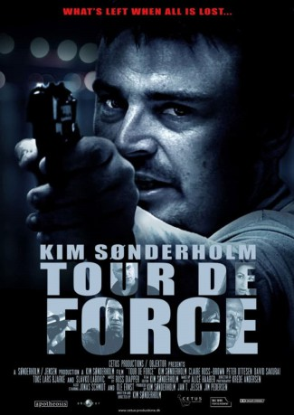

#11652 Tour de Force
 
 IMDB-Wertung: 4.7 / 10
IMDB-Wertung: 4.7 / 10  Metascore: 0
Metascore: 0 
Frank ist ein ganz normaler Police Officer - bis seine Familie ermordet wird. Eine Tragödie, die ihn in die totale Verzweiflung stürzt. Doch nachdem er seine Trauer überwunden hat, zählt für ihn nur noch eines: Rache! Er stürzt sich in einen verzweifelten Rachefeldzug und verfolgt als eiskalter Killer all jene, die für den Tod seiner Familie verantwortlich sind. Frank ist einer unglaublichen Intrige auf der Spur: Nicht nur bei der korrupten Polizei deckt er Machenschaften auf, die diese spannende Tour de Force mit sich bringen
.
Jahr: 2010
Dauer: 91 Minuten
FSK: 18
Land: Dänemark Studio: WVG MedienTonspuren:
Untertitel:
Auflösung: SD (672x352) Größe: 999 MB
Genre: Action, Thriller, Drama
Regisseur: Kim Sønderholm
Drehbuch: Kim Sønderholm, Kim Sønderholm
Soundtrack: Rusty Apper
Darsteller:
- Kim Sønderholm als Frank
- Claire Ross-Brown als Naomi
 David Sakurai als Hiru
David Sakurai als Hiru Lars Bjarke als Skalde
Lars Bjarke als Skalde- Dan Zahle als JJ
- Magnus Bruun als Røde Ivan
- Rami Hilmi als Neil
- Behruz Banissi als Faruq
- David C. Hayes als Charlie
- Shahbaz Sarwar als Pires
- Michael René Jensen als Betjent Pedersen
- Dinna Ophelia Hæklund als Prostitueret #3
- Toke Lars Bjarke als Jonas
- Ole Ernst als Peder
- Alice Haaber als Emily
- Slavko Labovic als Boris
- Peter Ottesen als Holger
- Jonas Schmidt als Kriminalbetjent Bent Larsen
- Bob Anders als Kriminalbetjent Allan Holst
- Anja Owe als Politichef Solveig Jensen
- David Schack Trappaud als Django
- Diana Bock als Joy
- Jack Hansen als Danny
- Anders Henningsen als Ronnie
- Morten Vogt Urup als Mini-Holger
- Rusty Apper als Fallon
- Tim Brandt als Franz
- Bo Dalum als Jonni
- Daniel Engstrup als William
- Jens Krøyer als Harald
- Julie Kaya Nielsen als Simone
- Didier Oberlé als Pierre
- Jeanett Ørtoft als Betjent Maiken Christensen
- Jim A. Andersen als Politimand
- Dimitri Andriotis als Politimand
- David Bjergsø als Betjent Andersen
- Melany Denise als Sygeplejerske
- Pernille Egholm als Sygeplejerske
- David Petersen als Politimand
- Julian Spenke als Politimand
- Ditte Ussing als Kunde hos JJ #1
- Vibeke Zeuthen als Kunde hos JJ #2
- Ahmet Al als Ballademager på politistation
- Julia Lypso als Bordelejer
- Darle Zupelli als Bordeludsmider
- Catherine Brenner als Prostitueret #1
- Cecilie Samia Catholt als Prostitueret #2
- Camilla Pedersen als Prostitueret #4
- Tine Presterud als Prostitueret #5
- Claus Gøran Eklund als Benny
Datei: X:\FSK18-2010\Tour de Force (2010, FSK18, 672x352).avi seit 13.08.2019
Festplatte: FSK18
 Es gibt insgesamt 35 Filme in der Gruppe 'FSK18-2010'
Es gibt insgesamt 35 Filme in der Gruppe 'FSK18-2010'